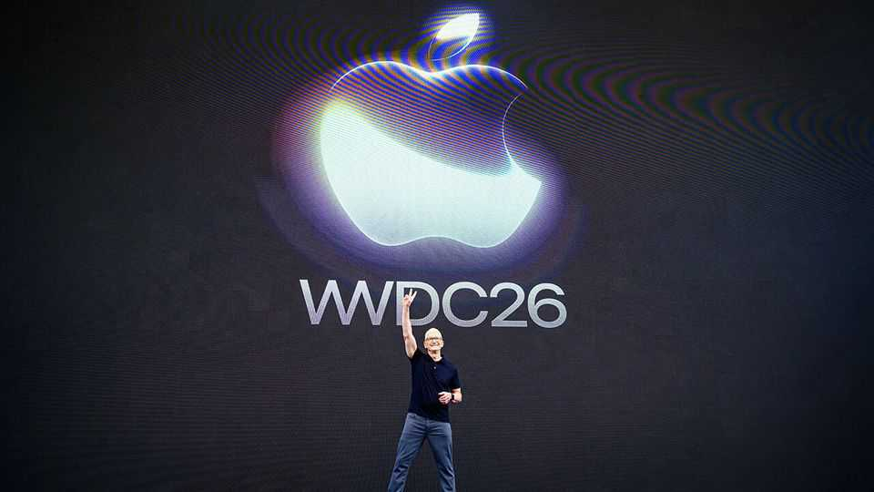

Apple’s new Siri is a dark horse in the AI race
The iPhone-maker does not need to build models to cash in on the technology
June 11th 2026

Two years ago Apple announced its first foray into artificial intelligence. Built largely on in-house models, “Apple Intelligence” promised to turn the iPhone-maker’s boneheaded Siri assistant into a perspicacious PA as clever as the whizziest chatbots—with the added advantage of access to a user’s personal data, alongside various other superpowers. The effort was an embarrassing flop, with Apple having delivered little of what it set out to offer.
Now it is taking a second bite. On June 8th, at its annual software jamboree, the company’s outgoing boss, Tim Cook, again unveiled a “new Siri”, which users can operate using their voice, a pull-down search bar or a chatbot-style app. Rather than building its own models, the company is using ones made by Google, which competes at the frontier of AI. Apple is betting that its devices, and the personal data stored on them, will become the portals through which users get access to the technology. Will its strategy pay off?
Apple’s earlier AI flubs have not caused it obvious harm. Its stock price is up by more than half over the past two years—less than for Google’s parent company, Alphabet, but more than for Amazon, Microsoft or Meta, all of which have torched stacks of cash in an effort to get ahead in the AI race. Apple, by contrast, has been able to sit back and take a cut of up to 30% of the revenues generated by chatbot apps installed on its devices.
Even so, competition is looming. OpenAI, maker of Chatgpt, is working with Sir Jony Ive, lead designer for many of Apple’s most famous products, to make its own AI-powered gadget. Google and Meta are investing in smart glasses. And Amazon is rolling out new AI features on its home companion, Alexa (though at a recent demonstration your correspondent found it to be no less moronic than the old Siri).
Apple has at least two big advantages over those hoping to use AI to dislodge the iPhone. First is the scope of its access. Many of Siri’s new skills rely on Apple’s ability to scan information such as a user’s messages and operate across apps. Second is Apple’s prowess in hardware and semiconductors. Many whizzy new features will run on the devices themselves, rather than needing to be routed through an external server, reducing delays and ensuring they can be used even without an internet connection. It will also mean that Apple will not need to invest in data centres to the same extent as other AI providers. (Some computationally demanding AI features that cannot be performed on devices, such as extending and reframing photos, will come with daily usage limits, though subscribers to Apple’s iCloud+ service may have more access.)
Apple is reportedly paying Google $1bn a year for its technology—a pittance compared with what it would cost to develop an alternative in-house. And once users are hooked on Siri, Apple could conceivably switch out the underlying models, giving it the whip hand in negotiations. “It will be built on Google tech, but Apple’s going to own that relationship with the consumer,” points out Gil Luria of D.A. Davidson, an investment firm.
Investors, for their part, are still chewing over the announcement; Apple’s share price dropped by 2% on June 8th. That may reflect the fact that, after years of delay, the new features are still not ready for consumers: the upgraded Siri will be available in America in autumn, but not on iPhones in the European Union or any Apple devices in China owing to regulatory snags. The new Siri will also not work in languages other than English at first.
John Ternus, Apple’s incoming boss and current hardware supremo, did not speak at the conference, which focused only on software. But the company’s leisurely timeline means he will oversee most of the rollout. Horace Dediu, a veteran Apple analyst, points out that, although the company works slowly, “it tends to deliver eventually.” Mr Ternus will have to prove that is still true. ■
To track the trends shaping commerce, industry and technology, sign up to “The Bottom Line”, our weekly subscriber-only newsletter on global business.